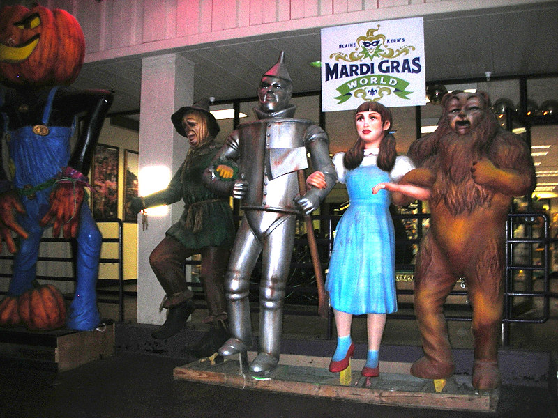

Johnnie and Oberta Baker's Photo Album Gallery Previous Next
|

Mardi Gras World--It’s a world of wonders, created by the people who bring Mardi Gras to life every year—the artists of Blaine Kern Studios. Since 1947, Blain Kern Studios has been as much a part of Carnival as the parades New Orleans loves. In fact, rhey create most of those parades, from concept through completion. They are the world’s leading makers of floats, sculpture and props. These four float figures need no introduction. |